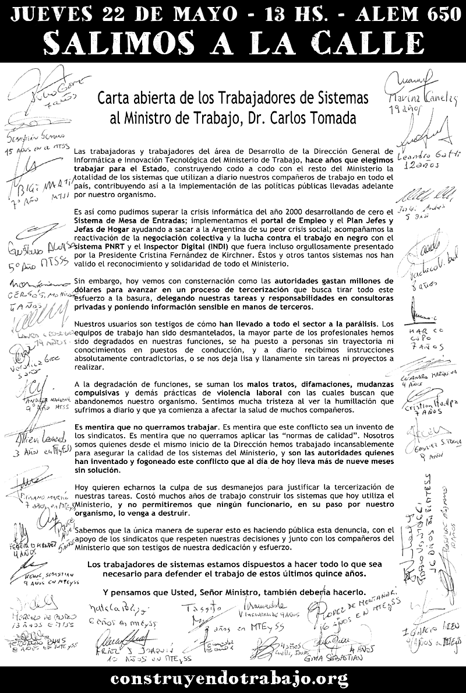

Construyendo Trabajo
Carta abierta que las trabajadoras y trabajadores del área de Desarrollo de la Dirección de Sistemas del Ministerio de Trabajo le dirigimos al Sr. Ministro, Dr. Carlos Tomada.

Descargar en pdf
Volver a construyendotrabajo